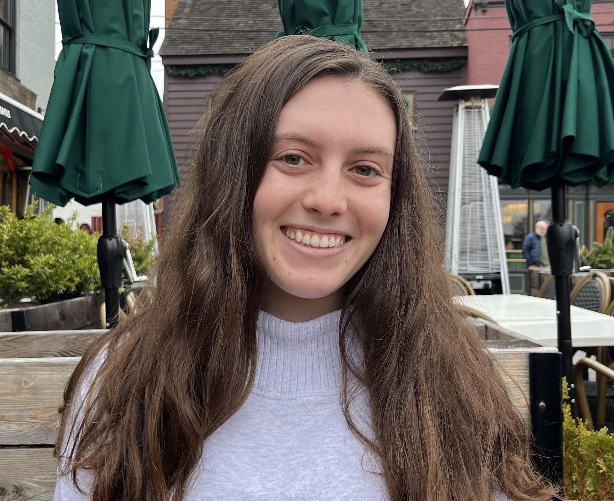

Student Journalist
I work between two and three editing shifts per week and edit daily publication’s news stories for accuracy, grammar, structure and AP style, and upload them to WordPress. I also pitch and write stories about the University Senate and higher education and contribute to breaking news coverage. I help lead weekly beat and general assignments meetings, guide freelancers and staff writers through the reporting process and contribute to editorial decisions.
I pitched and wrote local news articles about county government, events, transportation and more for a digital community news organization. I also selected photos to accompany stories, wrote headlines and uploaded content to WordPress.
I covered the Maryland General Assembly and Student Government Association breaking and enterprise news. I pitched and wrote two stories per week about campus and community news and contributed to breaking news coverage and blogs.
I efficiently use Tock, our reservation system, to seat customers and prioritize high standards of service, answer phone calls and respond to voice messages.